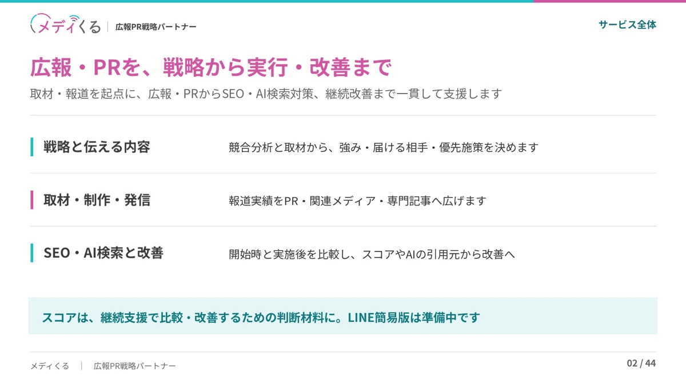
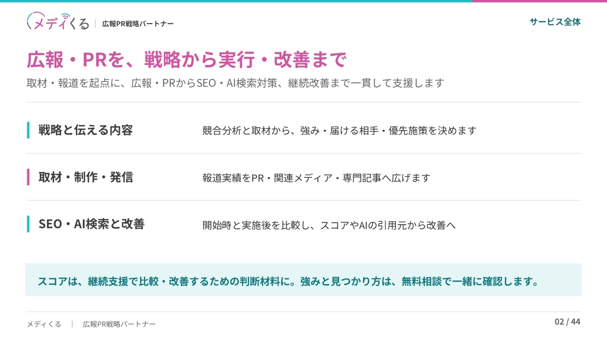

A反映済み・変更の記録無料相談案内への変更
LINEで点数が出るという案内を外し、無料相談で御社の強みと見つかり方を一緒に確認する案内へ。点数の提供や上昇は約束していません。
AI要約用資料｜44ページのうち2ページ目
変更前
変更後
44ページのPDFを見る
商談資料｜9ページ目
変更前
開始時を基準に、競合比較・施策・確認を重ねます。LINEの簡易スコア分析は準備中です
変更後
開始時を基準に、競合比較・施策・確認を重ねます。無料相談では、御社の強みと検索・AIでの見つかり方を一緒に確認します。
商談資料の変更後を見る
ここでは無料相談Aへの変更箇所を記録しています。採用中のPDFは、新デザインも反映した44ページ版です。商談資料の24ページ・70ステップと、取材・報道の入口は維持しています。